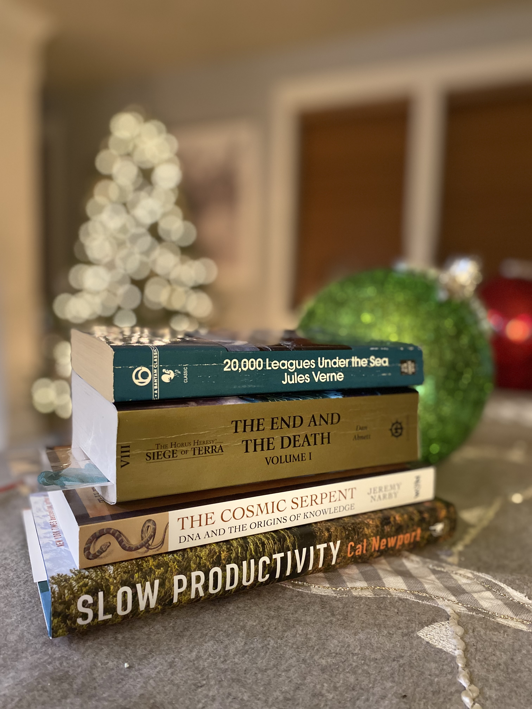
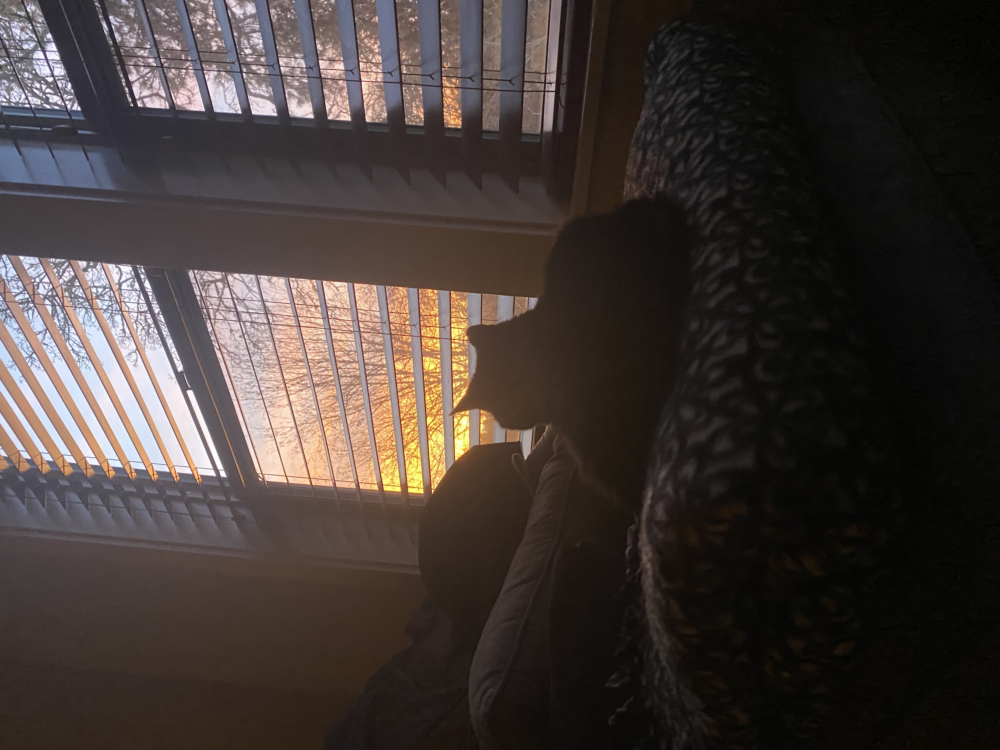

Year In Text 2024
Author: Sean Maden
Welcome to my Year In Text, the 2024 edition! This is a Sean's Technical Stuff project that I initiated last year in order to focus my accomplishments, synopses, reviews, and insights all in one place. You will find information about my own projects followed by books and other media that I enjoyed, found useful, or otherwise wanted to share about. There are sections Writing, Reading, and Shopping. Reading is divided into Cooking, Reads, and Games. Shopping contains external purchase links for featured books and games followed by my reviews for a variety of items and merchandise that I recommend. So what are you waiting for? Keep scrolling!Writing
Let us start with a tour of my latest projects from 2024.Research
Both research articles this year mark the culmination of the "deconvo" grant, a study of single-nucleus gene expression in human dorsolateral prefrontal cortex that was the focus of my two-year Postdoctoral Research Fellowship at Johns Hopkins School of Public Health. With collaborators at The Lieber Institute, we submitted these as preprints for peer-review at the conclusion of my fellowship in early Summer 2024. We further presented them at several conferences and workshops these past few years.- Maden SK, Huuki-Myers LA, Kwon SH, Collado-Torres L, Maynard KR, Hicks SC. "lute: estimating the cell composition of heterogeneous tissue with varying cell sizes using gene expression". BioArxiv 2024.04.04.588105; doi: https://doi.org/10.1101/2024.04.04.588105. I was the first or primary author on this preprint. Our efforts to understand the factors influencing deconvolution algorithm performances led us to delve into the bias arising from cell and nucleus size differences when predicting their relative proportions from a sample. In this manuscript, we presented findings from a multi-pronged approach that combined "pseudobulking," a type of simulation, bulk deconvolution of matched and unmatched tissue samples, and orthogonal validation in bulk deconvolution of unmatched blood tissue. We also present the new R/Bioconduction package, lute, which supports further investigation of and adjustment for cell and nucleus-specific size differences prior to predicting their proportions.
- Huuki-Myers LA*, Montgomery KD*, Kwon SH, Cinquemani S, Maden SK, Eagles NJ, Kleinman JE, Hyde TM, Hicks SC, Maynard KR, Collado-Torres L., "Benchmark of cellular deconvolution methods using a multi-assay reference dataset from postmortem human prefrontal cortex". BioArxiv 2024.02.09.579665; doi: https://doi.org/10.1101/2024.02.09.579665 I was a co-author on this preprint, which was led by Louise Huuki-Meyers. This benchmark of numerous deconvolution algorithms used our unique single nucleus data from dorsolateral prefrontal cortex to systematically evaluate factors that influence and bias predictions. It used standard statistical tests from the deconvolution literature and introduces several metrics and evaluation frameworks to tackle unique challenges presented by single-nucleus RNA-seq data and harmonization with bulk RNA-seq data. The investigation is supported with an excellent reproducible codebase and series of programming notebooks, and I would love to see this high bar of quality research programming and development extended to future studies of other regions of brain and for deconvolution in non-human species.
Programming
- Maden SK, Hicks S (2024). lute: Framework for cell size scale factor normalized bulk transcriptomics deconvolution experiments. R package version 1.2.0, https://github.com/metamaden/lute, 2023.
This is the deconvolution R package I wrote with my postdoc mentor. It supports a variety of preprocessing strategies for deconvolution experiment workflows. We also implemented things in a new class system that extensibly supports a variety of algorithms and is intended to be forked and expanded upon as the field continues to progress.
- Maden, Sean. "Professional website". Self-published. https://metamaden.github.io/, 2024.
This year I introduced my brand new professional website to support my ongoing job search and career journey. It is meant to reflect the amazing deliverables, research, and collaborations that I have had the fortune to be a part of. It is also meant to aggregate and organize materials to make them easy to navigate and find. Learn about me, my projects, and how to follow me on social media and elsewhere. I completely designed and devised this from scratch by teaching myself HTML, JavaScript, and CSS and using prompts in Copilot for guidance.
- Maden, Sean. "Year In Text, 2024". Self-published, https://metamaden.github.io/inst/blog/yearintext_2024/year-in-text-2024.html, 2024.
This past year I also devised and completed my first Year In Text, the 2024 edition. This project aggregates my synopses, reviews, writings, projects, and other fun stuff into a neat package delivered once a year. While it will mainly focus on my professional portfolio and book reviews, it will also contain some personal updates and reviews of merchandise, games, and hobby supplies. I have tentative plans to seek sponsorship and host entries on their own webpage. For the time being, I look forward to undertaking this project in successive years, and I hope it is of interest to readers and hobbyists alike.
Reading
This is where I unveil my top picks among books that I read this year. We begin with my "Year In Texts" where I share about my social media activity, followed by Cooking, Books (the main event), and concluding with Games. In most sections, the top pick is determined by a "1)", runners up by "2)", and remaining entries do not receive a number assignment.Year In "Texts"
I had some fun with playful and casual references to rollout my Year In Texts announcements on social media. Perhaps my favorite is "Outliers - Malcom Gladwell" or "OMG" as an acronym, which I find is an apt reflection of this particular book's contents.
> . from x #li #xi #blueskyi #bsi
— Sean ("metamaden") Maden (@metamaden.bsky.social) November 23, 2024 at 5:52 AM
Jane Eyre – Charlotte Brontë
— Sean ("metamaden") Maden (@metamaden.bsky.social) November 27, 2024 at 7:04 AM
Financial Freedom – Grant Sabatier
— Sean ("metamaden") Maden (@metamaden.bsky.social) November 27, 2024 at 7:05 AM
The 80/20 Principle – Richard Koch
— Sean ("metamaden") Maden (@metamaden.bsky.social) November 27, 2024 at 7:05 AM
Wind, Sand and Stars - Antoine de Saint Exupéry
— Sean ("metamaden") Maden (@metamaden.bsky.social) November 27, 2024 at 1:25 PM
Pesto: The Modern Mother Sauce: More Than 90 Inventive Recipes That Start with Homemade Pestos - Leslie Lennox
— Sean ("metamaden") Maden (@metamaden.bsky.social) November 27, 2024 at 1:26 PM
The Endurance Diet: Discover the 5 Core Habits of the World’s Greatest Athletes to Look, Feel, and Perform Better - Matt Fitzgerald
— Sean ("metamaden") Maden (@metamaden.bsky.social) November 27, 2024 at 1:28 PM
The Cheese Life: Recipes, Cheeseboards and Pairing - Patrick McGuigan and Mathew Carver
— Sean ("metamaden") Maden (@metamaden.bsky.social) November 27, 2024 at 1:30 PM
> Outliers - Malcom Gladwell
— Sean ("metamaden") Maden (@metamaden.bsky.social) November 27, 2024 at 1:35 PM
> Into the Abyss: How a Deadly Plane Crash Changed the Lives of a Pilot, a Politician, a Criminal and a Cop - Carol Shaben
— Sean ("metamaden") Maden (@metamaden.bsky.social) November 28, 2024 at 7:38 AM
> Demon Copperhead - Barbara Kingsolver
— Sean ("metamaden") Maden (@metamaden.bsky.social) November 28, 2024 at 7:38 AM
> The Tiger: A True Story of Vengeance and Survival - John Vaillant
— Sean ("metamaden") Maden (@metamaden.bsky.social) November 28, 2024 at 7:38 AM
Cooking
My year in cooking focused on practical tips and applications of new recipes and ideas. I also experimented with sharing about diet and food preparation tips on social media, as I have had more opportunities to pick up on new cooking tips, recipes, and brands since beginning my new job as Store Floater at New Seasons Market. Here are my cooking tips from social media:
Most convincing "tuna" (no-meat, meat substitute) I have tasted to date: kalamata olive hummus and feta tapenade. #vegeterrean #mediterranean #diet #food #fauxmeat #altmeat #meatalternatives
— Sean ("metamaden") Maden (@metamaden.bsky.social) November 17, 2024 at 1:18 PM
Most convincing "bacon bits" to date: roasted walnuts caramelized in brown sugar #icelandicxmas #christmasaroundtheworld #pasta #toppings #cooking #foodsubs
— Sean ("metamaden") Maden (@metamaden.bsky.social) December 25, 2024 at 2:07 PM
Frozen mandarin oranges keep like sherbert sorbet #tdd #seanstoragesolutions #nobakezone
— Sean ("metamaden") Maden (@metamaden.bsky.social) November 28, 2024 at 12:30 PM
"Datum" should be reserved solely for something that provides gastric relief, found in the Health & Wellness department of your local grocer. #foodfordata #databytes #datum #datums
— Sean ("metamaden") Maden (@metamaden.bsky.social) November 29, 2024 at 2:50 PM
Craving a rich pudding with mousse-like consistency? Stir 7oz dark drinking chocolate in 2cups whole milk at medium temp. I prefer Cacoco brand. Blend with blender until smooth then chill overnight. Consume on its own, or with whip cream on top. Enjoy! #drinkingchocolate #cacoco #pudding #dessert
— Sean ("metamaden") Maden (@metamaden.bsky.social) October 29, 2024 at 10:11 PM
What is your favorite mid-morning pairing of 2024? I will go first: espresso & popcorn #snacks #gourmand #academicsky #nutrition #budgeting
— Sean ("metamaden") Maden (@metamaden.bsky.social) September 13, 2024 at 10:12 AM
Pesto is a super sauce-group #fediverse #pestomemes #see_xslashtwitter
— Sean ("metamaden") Maden (@metamaden.bsky.social) September 6, 2024 at 10:46 PM
Top picks in cooking this year all have to do with fundamentals, whether this be the fundamentals of mother sauces, or sauces that are the foundational basis of many other new sauces, or the fundamentals of cheesemongering, the educating, selling, and pairing of cheeses based on many characteristics such as origin, flavor, and ripeness, respectively. Please enjoy!
1) "Pesto: The Modern Mother Sauce: More Than 90 Inventive Recipes That Start with Homemade Pestos" by Leslie Lennox and Linton Hopkins
 My rating: 5 of 5 stars
My rating: 5 of 5 starsThis was my top pick of 2024 in cookbooks because it (A.) got me to clean out my fridge, and (B.) rekindled my interest in home gardening. With gorgeous pictures, thoughtful details, and lots of curated recipes, Pesto drives to the fundamentals of not only what makes a pesto but also what makes pesto so delicious. Learn about different types of pesto, what differentiates pesto from tapenade, and much more. Do you have an older blender you have not been using or are you eying that new food processor for your next gift purchase? Want to start eating healthier, planning meals, and get into home cooking? If any of these applies even a little, this is a book you should consider picking up. A gentle warning: while I am fully on board with the more garlic heavy recipes in this volume, these may prove a little too much for some.
Tags: cooking, Sean’s Picks, Year In Text 2024, food prep, pesto, Mediterranean diet
Lennox, Leslie and Linton Hopkins. "Pesto: The Modern Mother Sauce: More Than 90 Inventive Recipes That Start with Homemade Pestos." Agate Publishing. Evanston, IL. 2019
2) "The Cheese Life: Recipes, Cheeseboards and Pairings" by Matthew Carver and Patrick McGuigan
 My rating: 5 of 5 stars
My rating: 5 of 5 starsLearn about the cultural importance of cheese in Great Britain with some delicious recipes that are great for entertaining. Written by a food cart owner and cheese tasting competition judge, this is another great one for cheese enthusiasts, aficionados, or "wannabees" (cheese substitutes, anyone?). Learn all about how to shop for cheese, how cheeses age, and many of the nuances of cheese pairings using texture, taste, and smell. Recipes are excellent for meals, game day, and entertaining a crowd.
Tags: cooking, Sean’s Picks, Year In Text 2024, turophile, cheesemonger, food cart, pairings
Carver, Matthew and Patrick McGuigan. "The Cheese Life: Recipes, Cheeseboards and Pairings." Octopus Books, 2023.
Books
The main event: my top picks for reads in 2024. These span a range of years and subjects, but an emergent theme was nonfiction histories in public health or engineering. First up are some fun statistics about the books featured this year. These are followed by the book citations and my synopsis-reviews. Finally, purchase links for all titles may be found in the next section.Summary statistics
Page and book counts by topic, subject, and author. Mouse over the text to view the citations list for each statistic.-
Total pages: 5,859
-
Median page count: 304
-
Maximum page count: 624
-
Brontë, Charlotte. "Jane Eyre." Penguin Classics, 2006.
-
-
Minimum page count: 232
-
Saint-Exupéry, Antoine de. "Wind, Sand and Stars." Harper, 1967 (Original work published 1939).
-
-
Top publisher including imprints: Penguin Randomhouse, 6
-
Brontë, Charlotte. "Jane Eyre." Penguin Classics, 2006 (Original work published 1847).
-
Ellis, Bret Easton, "The Shards: A novel", Vintage, an imprint of Penguin Random House, 2023.
-
Larson, Erik. "The Devil in the White City: Murder, Magic, and Madness at the Fair That Changed America." Vintage, an imprint of Penguin Random House, 2004.
-
Newport, Cal. "Slow Productivity: The Lost Art of Accomplishment Without Burnout." Portfolio, an imprint of Penguin Randomhouse, 2024.
-
Silver, Nate. "The Signal and the Noise: Why So Many Predictions Fail – but Some Don't." Penguin Books, 2012.
-
Smith, Zadie. "White Teeth: A Novel." Vintage, an imprint of Penguin Random House, 2001.
-
-
Authored by women: 3
-
Brontë, Charlotte. "Jane Eyre." Penguin Classics, 2006.
-
Kingsolver, Barbara. "Demon Copperhead: A Novel." Harper, an imprint of Harper Collins Publishers, 2022.
-
Shaben, Carol. “Into the Abyss: How a Deadly Plane Crash Changed the Lives of a Pilot, a Politician, a Criminal and a Cop.” Random House, 2012.
-
-
Author countries of origin: 4
-
Gladwell, Malcolm. "Outliers: The Story of Success." Little, Brown and Company, 2008.
-
Koch, Richard. "The 80/20 Principle: The Secret to Achieving More with Less." Nicholas Brealey Publishing, 2022.
-
Newport, Cal. "Slow Productivity: The Lost Art of Accomplishment Without Burnout." Portfolio, an imprint of Penguin Randomhouse, 2024.
-
Saint-Exupéry, Antoine de. "Wind, Sand and Stars." Harper, 1967 (Original work published 1939).
-
Vaillant, John. "The Tiger: A True Story of Vengeance and Survival." Alfred A. Knopf, 2010.
-
-
By science writers, about historical scientists: 2
-
Salsburg, David. "The Lady Tasting Tea: How Statistics Revolutionized Science in the Twentieth Century." Henry Holt and Company, 2002.
-
Ananthaswamy, Anil. "Through Two Doors at Once: The Elegant Experiment That Captures the Enigma of Our Quantum Reality." Dutton, 2018.
-
-
About aviation and/or flying: 3
-
Gladwell, Malcolm. "Outliers: The Story of Success." Little, Brown and Company, 2008.
-
Saint-Exupéry, Antoine de. "Wind, Sand and Stars." Harcourt, 1967.
-
Shaben, Carol. “Into the Abyss: How a Deadly Plane Crash Changed the Lives of a Pilot, a Politician, a Criminal and a Cop.” Random House, 2012.
-
-
About or featuring historic disasters: 3
-
Gladwell, Malcolm. "Outliers: The Story of Success." Little, Brown and Company, 2008.
-
Larson, Erik. "The Devil in the White City: Murder, Magic, and Madness at the Fair That Changed America." Vintage Books, 2004.
-
Shaben, Carol. “Into the Abyss: How a Deadly Plane Crash Changed the Lives of a Pilot, a Politician, a Criminal and a Cop.” Random House, 2012.
-
-
I recommend for careers in public health: 2
-
Salsburg, David. "The Lady Tasting Tea: How Statistics Revolutionized Science in the Twentieth Century." Henry Holt and Company, 2002.
-
Kingsolver, Barbara. "Demon Copperhead: A Novel." Harper, an imprint of HarperCollins Publishers, 2022.
-
-
I recommend for learning how to budget better: 2
-
Koch, Richard. "The 80/20 Principle: The Secret to Achieving More with Less." Crown Currency, 1999.
-
Sabatier, Grant. "Financial Freedom: A Proven Path to All the Money You Will Ever Need." Penguin Random House, 2020.
-
-
Featuring postdoctoral fellows: 3
-
Newport, Cal. "So Good They Can't Ignore You: Why Skills Trump Passion in the Quest for Work You Love." Business Plus, 2012.
-
Salsburg, David. "The Lady Tasting Tea: How Statistics Revolutionized Science in the Twentieth Century." Henry Holt and Company, 2002.
-
Vaillant, John. "The Tiger: A True Story of Vengeance and Survival." Alfred A. Knopf, 2010.
-
-
Most recent publication in 2024: 2
-
Newport, Cal. "Slow Productivity: The Lost Art of Accomplishment Without Burnout." Portfolio, an imprint of Penguin Randomhouse, 2024.
-
Kingsolver, Barbara. "Demon Copperhead: A Novel." Harper Perennial, an imprint of HarperCollins Publishers, 2024.
-
-
Original publication before 1940: 2
-
Brontë, Charlotte. "Jane Eyre." Penguin Classics, 2006 (Original work published 1847).
-
Saint-Exupéry, Antoine de. "Wind, Sand and Stars." Harper, 1967 (Original work published 1939).
-
Highlights
These books received top marks from me this year.1) The Lady Tasting Tea: How Statistics Revolutionized Science in the Twentieth Century by David Salsburg
 My rating: 5 of 5 stars
My rating: 5 of 5 starsMy top read of this year: a global trek that traces the origins of many top academic schools and societies in the United States. Written by a theoretical physicist about historical figures in statistics, specifically the life and times of Ronald Fisher, without too much computing and probability. Contains surprising and gripping historical information, including the origin of the LD50, lung cancer causation establishment from smoking, and how we perceive and quantify significance. A forgivable downside is that it cleaves very close to its own lamplight and perhaps what was found there. These insights are ultimately justified by its efforts to weave the social fabric of statistics and academic organizations for readers. This is a huge utility boon, whether audiences are aspirants or just trying to assemble professional citations and contact information. If you are considering a career in medicine, social work, or academics, especially statistics, public health, and math, I recommend this title alongside "The Botany of Desire" by Michael Pollan, "Empire of Pain" by Patrick Radden Keefe, and another top pick for me this year, "Demon Copperhead" by Barbara Kingsolver.
Tags: Sean's Picks, Year In Text 2024, public health, public safety, nonfiction, history, statistics, statistics associations, american statistical association, naming, bootstrapping, simulations, frequentism, fisher, student t, statistical test
#publichealth #publicsafety #naming #bootstrap #simulation
Salsburg, David. "The Lady Tasting Tea: How Statistics Revolutionized Science in the Twentieth Century." Henry Holt and Company, 2002.
2) The Endurance Diet: Discover the 5 Core Habits of the World's Greatest Athletes to Look, Feel, and Perform Better by Matt Fitzgerald
 My rating: 5 of 5 stars
My rating: 5 of 5 starsSports writer, journalist, and athlete Matt Fitzgerald provides a straightforward thesis: what do we learn about diets when we survey top athletes across sports? This was a lively meta-analysis that is, to my knowledge, first in its class. A careful synthesis of many strands of evidence across space and time, with amazing recipe highlights and insightful guidance that should compel most audiences. A high-octane celebration of effort, performance, and endurance that delivers on all fronts. While it covers a variety of dietary types with a main focus on high performance rather than allergies, restrictions, or preferences, as a vegetarian reader taking notes, I got inspiration and useful tips that inspired my meal and exercise planning this year. A journey well worth taking.
Tags: Sean’s Picks, Year In Text 2024, health, meta-analysis, active, veggies, endurance diet, dieting, sports nutrition, world sports, world records
#athleticsmetaanalysis #sportsnutritionin2024 #activeveggies #theendurancediet #booksbymattfitzgerald
Fitzgerald, Matt. "The Endurance Diet: Discover the 5 Core Habits of the World's Greatest Athletes to Look, Feel, and Perform Better." VeloPress, 2016.
2) Slow Productivity: The Lost Art of Accomplishment Without Burnout by Cal Newport

My rating: 5 of 5 stars
Considering a shift, career change, or extra-academic pursuit? This book has useful tips to encourage self-evaluation, temperance, pacing, and studied discipline; in this it may serve as a wake-up call. Readers across professional fields could benefit from the nifty framework posited by Newport, an experienced writer and a professor. Twelve years ago, Newport’s “So Good They Can’t Ignore You” inter-wove autobiographical context and professional interviews in a way that made the idea of ultimate professionalism vivid and tangible for the academic’s academic. This work of nonfiction, Newport’s ninth offering, also surveys a wide span of professionals and topics. Fascinating accounts of how productivity works at research labs like the Broad Institute, companies like Tim Cook’s Apple, and for initiatives such as the Slow Food movement in Italy, all come to the fore here. Discrete types of real professional blockages are considered and readers are offered new organizational concepts of enduring relevance within interconnected society. Slow Productivity mesmerizes in both subtlety and depth, much like peering at the surface of a glacial lake from far above. If any of this interests you, I also recommend the author’s weekly newsletter. One of my tops this year.
Tags: Sean’s Picks, Year In Text 2024, motivation, wellness, academics, business, productivity, success stories
#booksbycalnewport #slowproductivity #sptlaawb #networking #liremote #academia #careeradvice
Newport, Cal. "Slow Productivity: The Lost Art of Accomplishment Without Burnout." Portfolio, an imprint of Penguin Randomhouse, 2024.
2) Into the Abyss: How a Deadly Plane Crash Changed the Lives of a Pilot, a Politician, a Criminal and a Cop by Carol Shaben
 My rating: 5 of 5 stars
My rating: 5 of 5 starsOne of my top reads of this year. Begins with the amazing account of the 1984 Wapiti Air plane crash in the wilderness of Alberta, Canada, from which the author's father, a Canadian diplomat, survived. Details the extensive, and often seemingly excessive, travails of the survivors, their shared and personal struggles to make their way in life after unthinkable disaster. What set it apart for me was its thorough breakdown of key events, and, respectively, its handling of sensitive topics which I found uniquely detailed and circumspect. A great book about aviation history, safety standards, and enduring tolls exacted by tragedy.
Tags: Sean’s Picks, Year In Text 2024, aviation, flight safety, mental health, historical nonfiction
#airlines #wapitiairlines #flying #pilots #airdisasters #canada #canadianwilderness #emergencyresponse #publicutilities"
Shaben, Carol. “Into the Abyss: How a Deadly Plane Crash Changed the Lives of a Pilot, a Politician, a Criminal and a Cop.” Grand Central Publishing, an imprint of Hachette Book Group, 2012.
2) Demon Copperhead by Barbara Kingsolver
 My rating: 5 of 5 stars
My rating: 5 of 5 starsAnother 2024 highlight. Like a Shakespearean production was set in a landfill. Who knew the smell of toxic garbage could be so informative? A tale inundated with football locker rooms, impoverished peoples, epic struggles, inner turmoils, and bonds of all kinds. We feel for the hotheaded, surprisingly cold-blooded & cool protagonist. But sections read like grocery store Clear Channel snippets, and others tease at artistic salvation. Defies readers focus through an almost completely topsy-turvy existence in one Damon "Demon" Copperhead to glimpse havoc wreaked on a fictional Appalachian community by drug addiction, ignorance, and violence. Great, especially if you find the journey is its own reward. One I would recommend to those pursuing careers in medicine, public health, and social work. This material may be triggering for some readers.
Tags: Sean’s Picks, Year In Text 2024, fiction, dramatic fiction, drug addiction, public health, social issues
#addiction #painkillers #louisiana #novelsla #novels #copperhead #poverty #herosjourney #kingsolver
Kingsolver, Barbara. "Demon Copperhead: A Novel." Harper Perennial, an imprint of HarperCollins Publishers, 2024.
More Year In Text 2024
Jane Eyre by Charlotte Brontë
 My rating: 5 of 5 stars
My rating: 5 of 5 starsTo this day, Jane Eyre shocks and awes with its raw emotion and disruptive social commentary. We are shown the world through the eyes of Jane, a determined and indomitable protagonist who navigates poverty, harsh education, cruel circumstances, and tragedy. With its original publication the book hugely influenced prose and fiction. Today, its cultural significance continues to have significance, and its influence is not difficult to trace. I had the pleasure to attend a phenomenal play adaptation of the novel by the Oregon Shakespeare Festival in 2024 that creatively blended huge set pieces, intricate wardrobes, and standout modern musical numbers. Reading this truly classic novel for the first time in 2024, nearly 177 years since its first publication, was an instructive refresh in novel literacy. An easy recommendation for all who love to read.
Tags: Year In Text 2024, Age of Enlightenment England, novels, fiction, prose, reading, writing, historical, classics
#yearintext2024 #seanyearintext #fiction #historicalfiction #novels #classics #reading
Brontë, Charlotte. "Jane Eyre." Penguin Classics, 2006 (Original work published 1847).
The Devil in the White City: Murder, Magic, and Madness at the Fair That Changed America by Erik Larson
 My rating: 4 of 5 stars
My rating: 4 of 5 starsChicago in the late 19th century. The accounts of the travails of Daniel H. Burnham to make the World’s Fair a success for Chicago are thrilling, in particular the unprecedented engineering challenges and the goal of topping the Eiffel Tower with the world’s first Ferris Wheel. Alternately, the account of the criminal mastermind and serial killer H.H. Holmes, who operated while the fair was going on, both shocks and chills. A classic in historical nonfiction for anyone with an interest in travel, fairs, history, and feats of engineering.
Tags: Year In Text 2024, World’s Fair, Chicago World’s Fair, architecture, crime nonfiction, historical nonfiction, engineering feats
#history #crimenonfiction #engineeringfeats #chicagoworldsfair #worldsfair #ferriswheel #architecture
Larson, Erik. "The Devil in the White City: Murder, Magic, and Madness at the Fair That Changed America." Vintage, an imprint of Penguin Random House, 2004.
The Tiger: A True Story of Vengeance and Survival by John Vaillant
 My rating: 4 of 5 stars
My rating: 4 of 5 starsThis exceptional account of the brutality of living conditions in the far reaches of Siberia, Russia tracks the commingled experiences of three Russians as they grapple with lawlessness, brutal climate, savage predators and those who track them. With the plight of the Amur tiger on the brink of extinction squarely in focus, this manuscript is rife with cultural influences such as Armenian radio, global media, and issues in conservation. It spans accounts of the historic Russia-China border struggles, tracing the world’s first tiger preserves, and detailing population records from archaeological evidence. If overall you found this as dramatic, insightful, and charming as I did, you may also enjoy "To The Top of Denali" by Bill Sherwonit, and my Year In Text 2024 winners.
Tags: Year In Text 2024, nonfiction, media, scholarship, conservation, predators, ecology, poaching, Siberia, Russia, nature
#markov #tigers #siberia #nonfiction #history #soviet #media #literature"
Vaillant, John. "The Tiger: A True Story of Vengeance and Survival." Vintage by Knopf, 2010.
The 80/20 Principle: The Secret to Achieving More with Less by Richard Koch
 My rating: 4 of 5 stars
My rating: 4 of 5 starsTime and markets. Why do corporations need strategy? What factors determine company feast and famine? Entrepreneurs and networkers alike can rejoice. The collective efforts of the author's(s') team connect established ideas like the Pareto Principle to modern success stories of various types. Think like a connoisseur of strategy and begin to apply person-hours logic at scale. I appreciated the plots. A strong contender for my picks this year.
Tags: Year In Text 2024, nonfiction, business strategy, motivational, insider, analytical, finance, better budget
#8020principle #motivation #datadrivers #strategy #occlusive #notime
Koch, Richard. "The 80/20 Principle: The Secret to Achieving More with Less." Crown Currency, 2015.
Financial Freedom: A Proven Path to All the Money You Will Ever Need by Grant Sabatier
 My rating: 4 of 5 stars
My rating: 4 of 5 starsBlogs. Side hustles. Websites that make passive income. Early retirement. Does the government just hold on to your money before giving it back? Does paying off your own debt count as a gift to yourself? This thought-provoking read is also a time capsule of the author's manifold hobbies, projects and interviews. Somewhat autobiographical, somewhat consulting companion, and mostly instructive to an alternative way of managing investments. Useful advice about compounding interest, contingencies, strategy, and nomenclature for the investment noobs and finance adventurers alike.
Tags: Year In Text 2024, nonfiction, better budget, modern monies, investment, career transitions, motivational
#diversifiedincome #scooter #bus #freelance #motivation #selfhelp
Sabatier, Grant. "Financial Freedom: A Proven Path to All the Money You Will Ever Need." Avery, 2020.
Through Two Doors at Once: The Elegant Experiment That Captures the Enigma of Our Quantum Reality by Anil Ananthaswamy
 My rating: 2 of 5 stars
My rating: 2 of 5 starsWritten by an acclaimed science writer, journalist, and editor, this title focuses on a profound quantum physics experiment first conducted by Thomas Young in the early 19th century and later reapplied and expanded upon by Einstein and others. Readers are taken on a journey between the human and particle scale that is initially quite appealing. The highlight for me came in the first half, where strong connections are drawn between the historical experiments of key physicists and more recent research efforts that expanded on these efforts in the field of quantum physics. Unfortunately, as the book’s timeline moves closer to modern day, I felt disappointed readers were not shown where these insights fit into the greater scheme of adjacent areas of physics and engineering where they likely have had influence. One supposes the idea is to allow the reader enough new terminology and information to delve deeper themselves. However, this is a risky trade on our time that, for this reader, bottoms out after a solid beginning. Well-written, but very light in its treatment of math, logic, tables, figures, or other information about the factors, whether monetary, social, political, or intellectual, that allowed this fascinating scientific discourse to take place in the first place. I would tentatively recommend this to someone interested in a non-technical treatment of quantum mechanics. However, I found it to be an example of lay writing that goes the way of Icarus, flying too far with inadequate tools.
Tags: Year In Text 2024, nonfiction, history, physics, quantum mechanics, lay writing
#YearInText2024 #sciencewriting #laywriting #nonfiction #historicalscience #quantummechanics #theoreticalphysics
Ananthaswamy, Anil. "Through Two Doors at Once: The Elegant Experiment That Captures the Enigma of Our Quantum Reality." Dutton, 2018.
The Signal and the Noise: Why So Many Predictions Fail—But Some Don't by Nate Silver
 My rating: 2 of 5 stars
My rating: 2 of 5 starsWritten by the statistician who founded the website FiveThirtyEight, this is a partly autobiographical, partly analytical title that takes us through the history of baseball, patterns of disease spread, weather forecast reporting, and notable political campaigns, all to shed light on how games of chance function and why some individuals are great at winning them. The common thread across each topic was somewhat difficult to trace at times, and I occasionally felt the flames of mystery, intrigue, and breathless hype surrounding a kind of “quant” (or expert data analyst) zeitgeist were being deliberately flamed. While I was eager to learn about how the author thinks about Bayesian theory, I unfortunately did not find the treatment of this topic and its application to game theory analysis led to the insight that was intended, and it left a suggestive impression of an elaborate deterministic mechanism that may be harnessed by the best gamers and bet-placers. Too much of the provided reasoning seemed motivated and potentially biased. Fortunately, the importance of critical thinking and good quality data was a consistent theme revisited throughout. The bottom line is a unique combination of subjects, themes, and statistical reasoning that recalls notable game theory titles like “Bringing Down the House” and “Moneyball.” Statistical consulting aspirants and enthusiasts of sports analysis, political debates, FiveThirtyEight, and games of fortune may want to give this one a chance. Other readers should likely either fold or hold for further work from the author.
Tags: Year In Text 2024, nonfiction, game theory, statistics, statistical theory, quant, financial analysis, data science, political science
#thesignalandthenoise #laywriting #analyticalbooks #bayesianstatistics
Silver, Nate. "The Signal and the Noise: Why So Many Predictions Fail – but Some Don't." Penguin Books, 2012.
Wind, Sand and Stars by Antoine de Saint-Exupéry
 My rating: 4 of 5 stars
My rating: 4 of 5 starsOften poetic, occasionally visionary and charismatic, this memoir recounts the author's time flying in the French miliary then delivering mail for the Aéropostale, or French postal company, that resonates with heroism in light of profound risk and occasional disaster. From a first-person perspective, we learn about how mail delivery pilots grappled with harsh flying conditions, extreme climates, and sociopolitical tensions both abroad and closer to home. These accounts mostly take place in and over France, North Africa, South America, and Spain during the early twentieth century. The author’s distinct whimsical style of writing, which shines through even in the English translation from the original French, flies fast and leaves a lingering impression. I can highly recommend this classic in aviation nonfiction.
Tags: Year In Text 2024, memoir, flying, aviation, aviation history, postal history, nonfiction, France, French history, travel
#publicdomain #flying #postalmail #aeropostale #memoir #history
Saint-Exupéry, Antoine de. "Wind, Sand and Stars." Harper, 1967 (Original work published 1939).
Outliers: The Story of Success by Malcolm Gladwell
 My rating: 4 of 5 stars
My rating: 4 of 5 starsInsightful, creative, inventive, and brilliant. From hockey, to rug cleaning, to intelligence tests, to airline tragedy. Here, Gladwell offers a compelling narrative about explainable anomalies that flies by. Learn about a range of subjects and interesting statistics, including how students’ birth month impacts their chances at a successful career in professional sports, and the various types and applications of IQ tests - there are several! This book is likely to be of interest to news connoisseurs, students, ambitious professionals, and anyone who seeks to better understand some of the intriguing mysteries that underpin social order, current events, and outstanding success stories. It is also a great example for writers to follow in how to balance tone with exposition and weave disparate topics to achieve good insight. Insightful, creative, inventive, brilliant.
Tags: Year in Text 2024, nonfiction, intelligence tests, company management, motivational, educational, informative, exposition
#nonfiction #successstory #genius #tragedies #history #analyses #engineering"
Games
Video Games
1) "Cyberpunk 2077" by CD Projekt Red
Product: Cyberpunk 2077
Company/Brand: CD Projeckt Red
Read my review on Steam Store
I have been enthusiastic about this title since first learning about it what feels like ages ago, when it was first announced. When it came out, I had to wait to upgrade my hardware to run it. Out the gate, there are many similarities with CD Projekt Red’s acclaimed Witcher games in the adjacent genre of fantasy. Both are based on other works, where Cyberpunk 2077 is based on the Cyberpunk tabletop game series by Mike Pondsmith. And both are open-world games in which the protagonist is a bit of an outcast who cleaves to a tribe in order to make their way in the wide, harsh world. This is where their similarities end for the most part, but it is easy to extrapolate from the wild success and huge improvements of successive installments in the Witcher games franchise, to also get enthusiastic for where the studio plans to take the Cyberpunk 2077 game series. Its initial offering is already formidable.
This is a vast open world, with the centerpiece of Night City an enormous bustling megalopolis, and the outskirts and desert wastes feeling desolate and hostile. From menus to loading screens to the in-game world, we are treated to a rich and varied backdrop of videos, posters, news articles, websites, and music that immerses us in the loud, seductive, cartoonish, violent, sarcastic, humorous, political, artistic, and expressive content of Night City’s inhabitants. Players play as V, and may choose one of three paths that determine where and how to begin their journey. Regardless of choice, they will team up with a Night City criminal organization to take down a huge Orwellian corporation. There are multiple endings determined by the player’s choices throughout.
While all of this is thematically cut from the tried and true cyberpunk cloth, what is unique is the depth, extent of realization, and sheer volume of fine-tuning, customization, and decision-making made accessible to players. This pairs with an intricate in-game culture and evolving story that creates staggering narrative potential. Dialogue paths are surprisingly rich and reward replay. Character models and faces are some of the most detailed and convincing in a computer game to date. The icing on the cake is the inclusion of amazing and memorable original music from real-life musicians like Grimes and HEALTH, and the likeness and voice acting of Keanu Reeves as the fictional Johnny Silverhand, who steals the show. In fact, I was also surprised at how many of the game’s fictional characters were memorable and endearing.
Notably, this was my first gaming experience in which I encountered bugs that actually seemed like features rather than flaws given the gritty, glitchy, and harsh nature of many environments and situations. A rare random clipping issue was not unexpected or even fourth wall breaking after hacking security cameras and cybernetic appendages, then sprinting through a warehouse shootout. On the subject, bugs and other issues running the game were a notable news item at first release. Running the game several years and many patches later, I found it ran great with only minor adjustments to settings on either my gaming laptop or Steam Deck.
Ultimately, this is a showstopper title from one of the best open-world game studios. It left me craving more, and it also drummed up memories of cyberpunk literature that I will now need to revisit, specifically William Gibson’s Sprawl trilogy. Whether you are new or veteran to the genre, Cyberpunk 2077 is a rewarding and top-rate experience.
Tags: Year In Text 2024, cyberpunk, open-world, roleplaying game, action rpg
#cdprojektred #cyberpunk2077 #cyberpunk #openworldgame
CD Projekt Red. "Cyberpunk 2077." CD Projekt, 2020.
2) “Elden Ring: Shadow of Erdtree,” by From Software
Product: Elden Ring: Shadow of the Erdtree
Company/brand: From Software
Read my review on Steam Store
This DLC is more of the same high-quality open-world experience as the base game, with additional environments, enemies, NPCs, and, importantly, character build options that carry over and add value to the base game and online player duels. The new weapons, spells, and equipment are for the most part flashy and fun, breathing new life into an already stellar combat experience. This DLC adds dozens of mini-bosses and many new main bosses, some of which are among the hardest of From Software’s titles.
Probably the most important element for me about this title was the atmosphere. This is where the environment, new enemies, and player abilities combined to create entirely new and memorable locations and experiences. The disembodied mage hands make an appearance, as well as new dragon habitats and extremely vast swampy and mountainous terrain. Some criticism has been directed at the inclusion of enemies from the base game, and I found this to be an occasional disappointment that was mostly forgivable because of the level of ambition of level design, environmental storytelling, and general high quality of the open-world experience to be had.
Playing on the Steam Deck, I was utterly blown away by the smoothness of the experience. The only exception was larger areas of the map that seemed to be pushing the graphics engine and resulted in bugs I did not experience when playing the original game. There are performance issues with larger maps. Pop-ins were a common issue mentioned online, and I unfortunately also experienced drastic and distracting pop-ins in larger sections of the late-game map.
From Software has pushed the bar and budget of its game engine with this ambitious, expansive, and content-rich DLC for Elden Ring. We are treated to almost an entirely new Elden Ring installment brimming with new experiences and creative juxtaposition of previous elements. This was a shadow well worth basking in.
Tags: Year In Text 2024, open-world games, soulslike, fantasy, action rpg
#eldenring #fromsoftware #shadowoftheeerdtree #eldenringdlc
FromSoftware. "Elden Ring: Shadow of the Erdtree." Bandai Namco Entertainment America, 2024.
Board Games
1) "Cat Stax" by Brainwright
Product: Cat Stax
Company/brand: Brainwright
Review title: Casual and cooperative portable puzzler for gamers of all levels
Read my review on Amazon Store
The light and cooperative nature of this game makes it a pleasing one to have around for a few spare minutes or as a fun addition to your board game night. It sets up and tears down with great ease, and we found it quite safe to play around our own domestic feline, which strikes me as truth in marketing. For the most part, game components are large, colorful, and do not present a choking hazard. All in all, I can recommend this for casual gamers and enthusiasts alike, especially if you own or enjoy games like Cat in The Box, a compact trick-taking game with a cat theme, and Isle of Cats, a larger cat jigsaw puzzle game.
Tags: Year In Text 2024, games, board games, puzzlers, family board games, hobbies
#boardsnotbored #tetris #puzzlers #felinespace #gameswithcats
"Cat Stax." Brainwright.
Shopping
Treat yourself, buy a gift for others, buy many gifts for others. In this section, you can buy what you read about from external stores. In addition to the Year In Text 2024 titles, find purchase links and my reviews for an array of other items such as outdoor wear, electronics, and organizers. Don't spend it all in one place!
Year In Text Media
Purchase links for mentioned books and games from this edition of Year In Text.All Books
Games
-
"Cat Stax." Brainwright.CD Projekt Red. "Cyberpunk 2077." CD Projekt, 2020.
Other products
In this section, I recommend other products that impressed me this year. These generally either got me to get outside or organize my space.
I engaged in cross-training and multiple sports activities this year, including regular running, my first 5k, and beginning regular bicycle commuting with the start of a new job. These experiences have led me to consider, compare, and favor a lot of new gear and accessories. Here are my top recommendations in active wear this year.
Allant 7S+ eBike
Product: Allant 7S+ eBike
Company/brand: Trek
Review title: A paragon of economy commuter eBikes
View my review on the Trek StoreThis electronic mountain bike has a bunch of great qualities. Some of the distinguishing specs include including locking front wheel shocks, disc brakes, integrated lighting, and Bosch smart electronic system with digital interface, Bluetooth support, electric output levels, and battery gauges for lights and propulsion. It also includes a sturdy rear rack that I outfitted with semipermanent bags and covered in reflective tape for visibility. Trek helpfully includes a warranty with regular maintenance and damage coverage.
After three solid months of regular commuting and over 300 miles of suburban riding, I can highly recommend this bike for touring and traversing a variety of trails and pitches in most weather conditions. Unlike with my previous eBike, I have yet to experience issues with range or battery life. I have only had the battery at zero charge once, and even then the bike handled fine on flat ground the short remaining distance back home to recharge. The only negative encounters I experienced were minor and relatively straightforward to resolve:
(1) Within a few days of purchase, I snapped off one of the three included battery keys in the on-bike lock when trying to remove the battery for charging. Fortunately Trek had my back and my warranty covered a lock replacement and fix. Since then I use the handy on-bike charger and keep my bike plugged in over night. Problem solved!
(2) I suffered a rear flat tire, where my wheel picked up large metal pin while crossing train tracks. When the flat occurred, the bike handled well and I did not go down, which I attribute to the factors of wheel size, hefty frame weight, and powerful propulsion system. I was able to carefully get my bike to work and back home to replace the tire.
When I bought my bike I also purchased a number of accessproes that I highly recommend to upgrade the comfort and safety of your travel experience. I have gotten thorough use out of each one.
- (pedals) Bontrager Line Comp Flat Pedal Set. High-visibility color options with decent all-weather traction.
- (bell) Mirrycle Incredibell Original Bike Bell. Easy to operate with gloves, variable volume and decent performance even in damp weather.
- (mirror) Mirrycle Mirror. Great visibility, convenient adjustment, folds away when necessary.
- (panniers) Ortlieb Rear Panniers. Sturdy, waterproof, includes webbing and pocket sub-compartments, fits snugly to rear rack with three points of contact and two perpendicular top clips to secure loads.
- (lock 1 of 2) Kryptonite KryptoFlex 525 Double Loop Cable. Great initial lock, fits easily through frame and front wheel, which I secure with a padlock.
- (lock 2 of 2) Bontrager Ultimate Keyed Chain Lock. Studier and safer than a cable lock, fits snugly through frame and front wheel for most bike parking.
- (bike stand) CXWXC Bike Repair Stand. Works fine for my eBike, which is on the heavier side, and features a rotatable head, fully foldable legs for easy storage, handlebar hook, and tool tray.
- (tire levers) Bike Tire Levers. Includes 3 sturdy tire levers, all of which I used to change my eBike innertube. I ordered 2 sets, one that lives on the bike and a spare for my home workstation.
- (inner tubes) BWSHLF 27.5" Mountain Bike Inner Tubes (2 Pack). Spare innertubes are always handy to have in a bind.
Tags: Year In Text 2024, Sean’s Store Picks, Year In Text Shopping, bicycling, commuting, eBike, Trek, Allant S series, travel
#ebike #bikecommute #bikemaintenance #bicycleaccessories #bikesafety #maintenance #cycling #travel
Rechargeable Bike Helmet Light
Product: Rechargeable Bike Helmet Light
Company/brand: Greerride
Review title: A surprisingly ergonomic investment in comfort, convenience, and safety
View my review on the Amazon Store
The first several weeks of commuting on eBike, I opted to trust the static front and rear lights integrated into the electronic system of my Allant 7S+. While these running lights have the huge convenience of being always on and integral to the bike itself, I quickly realized that they are not enough to be visible and project my navigation intention to motorists across every traffic situation. Routinely, making turns can be tricky when my head turns are not visible, such as in heavy fog or downpour. I decided I needed a solid helmet light solution to get my intentions across and be safe across traffic and weather scenarios. With multiple settings including strobe for both a white front-side light and a red rear-side light, the Greerride helmet light seemed to fit the bill, and I was not disappointed!
Keeping this light charged overnight between rides, I have yet to have it fail. It stays charged during my workday and performs brilliantly when I need it for my 1.5-2 hours of daily commuting. The strobing front light easily illuminates road signs, street reflectors, and pedestrian high-visibility clothing. Power and light settings are toggled using a gel button on its top that is easy to press even with a gloved hand. The power button illuminates either a red when low and partially charged or green when fully charged via its micro usb port. Steady single button presses toggle the front light, while successive double-presses toggle the rear light. Either light can be set to strobe at a different rate from the other, adding further visual contrast when your head is turned. To mount the light securely to my standard bike helmet, I used some spare rubber webbing that I happened to have in addition to the supplies provided with the light. The light also includes materials for mounting to a hardhat or shell helmet, if that is your preference. It works like new after almost 2 months of riding in wet and dry conditions alike. This light should prove both a safety and convenience upgrade for regular riders.
Tags: Year In Text 2024, Sean’s Store Picks, Bicycles, Cycling, Bike commuting, All-weather riding, Safety, Bike accessories
#bicycling #bicyclecommuting #urbancommute #bikesafety #bikeaccessories #helmetlights
Patagonia Ultralight Fanny Pack
Item: Ultralight Black Hole Mini Hip Pack
Company: Patagonia
Title: An ultralight pack loaded with features
Read me review on the REI ShopI have always found dynamism in the relationship between utility and bags, packs, and cases of various kinds. From obsessing about card sleeves and carrying cases in grade school, to wearing out the straps on expensive bicycle messenger bags and high-tech backpacks as an adult, the sheer number of styles of bags and ways of using them can be staggering. Thus it is tough to assess a bag, even a fanny pack, in isolation without some context. Nonetheless, this compact and durable offering from Patagonia is well worth mentioning and recommending. It has a distinct character and a surprising amount of thoughtful features for such a small package.
First and foremost, the Patagonia fanny pack has a surreptitious utility and convenient capacity that augments your day-to-day routine almost immediately. The pack offers two compartments with a clip for a keyring in the smaller one. These are perfect dimensions for combining large-ish & small-ish items, such as (1) phone & earbud case, (2) shammy-and-sunglasses & sunscreen-and-keys, (3) notebook-and-snack & first-aid and credit card clip, (4) high-visibility vest & headlamp, etc etc. While it is water-resistant, you could also wrap stored items in a drawstring waterproof sack that may be fitted over its outside when it starts to rain. The pack’s compactness means many mods and components are easy to source from normal day-to-day living and experiment with in conjunction. When fully loaded, it is about the size of a nerf football, and I found it convenient to sling over my shoulder instead of my waist when carrying a relatively heavy load. Its garish colors provided good visibility. The silky-smooth texture of the waist strap prevents chafing. When I was out jogging, I found the strap was sufficiently lightweight and durable that I was able to hang a snap-on running cap and a shammy towel off of it without any discomfort. Overall, a well-designed fanny pack full of features whose compactness should enhance rather than hamper a wide variety of your outdoor activities.
Tags: Year In Text 2024, Year In Text merchandise, outdoors, packs, fanny pack, sports, running
#patagonia #patagoniapacks #rei #outdoors #fannypacks
Gym shorts
Product: Gym Shorts for Men
Company/brand: maamgic
Review title: Comfortable multi-season running shorts combining utility, performance, and self-expression
View my review on the Amazon StoreAfter trying several types of shorts for running from Amazon, I arrived at these because of the positive reviews and garish designs. What I got was a surprisingly sturdy and comfortable garment that felt good in all manner of outdoor conditions. As a bonus, the fun layered colors reminded me of another of my top YouTube channels, This Messy Happy, which provides solid practical running advice and a playful over-the-top enthusiasm for self-improvement. The drawstring is robust and supportive, and the pocket was large enough for my iPhone, and/or earbud case, depending on my needs. The flash of second layer adds character and some additional warmth and protection. I look forward to trying the same shorts in several additional patterns.
Tags: Year In Text 2024, Year In Text merchandise, outdoors, apparel, sports, running
#running #outdooractivities #joggers #activewear #activeapparel
Sport Earbuds
Product: Q35 Wireless Sport Earbuds
Company: hadbleng
Title: Excellent long-term economy earbuds
View my review on the Amazon Store
These bluetooth earbuds are probably my fifth pair that I have owned across different brands. Whereas I could usually keep track of other earbuds for around 2-3 months before losing at least one, I have managed to hold onto these earbuds for over 3 years now. This is thanks to the chunky dimensions and style, which I find appealing and gives off a kind of vintage 1980s cyberpunk vibe. The over-ear bands are comfortable and add enough material make these easy to spot and prevent them from rolling too far when dropped on the ground. Even if you lose one earbud, a pair of earplugs fits snugly in one of the case's charging ports.
There are a handful of snappy and easy-to-use touch controls on either earbud. While the wireless range is somewhat limited compared to other bluetooth earbuds, the controls are very responsive and have great fidelity when walking or running and streaming from a phone in a pack or coat pocket. Unplugged, these earbuds last for over a month when using a fully-charged docking case for overnight storage. Speaking of which, the charging case fits conveniently in a small sack, fanny pack, shirt pocket, or electronics organizer. I have used these earbuds working at the computer, doing chores, and walking and running in all manner of weather, and they have always performed consistently.
It all adds up to an excellent economy audio solution whether for doing chores at home, travelling, or just on-the-go. For iPhone and Android users alike, if you are looking for a consistent long-term bluetooth solution, I can highly recommend at least one set of these earbuds.
Update (1/16/25): Since these stellar earbuds are currently out of stock, I can recommend other earbuds of similar design and great user ratings, such as the HD65 Sports Headphones by Aptkdoe or the Q35 by sprtoybat.
Tags: Year In Text 2024, Sean’s Store Picks, Earbuds, Active wear, Running, Sports audio, Bluetooth earbuds
#running #activewear #sportsaudio #earbuds #bluetooth
Laptop Sleeve Case
Product: Laptop Sleeve Case
Company/brand: bagasin
Review title: Durable and spacious laptop storage with a minimalist briefcase style
View my review on the Amazon StoreI have had a compact Windows laptop for about 4 years. I was not able to source a laptop bag that fit it correctly until I came across this carrying case. The 13-inch case fits my ASUS ZenBook 3 very well and feels almost like a minimal briefcase with its capacity to store so many items for on-the-go work or travel. Its internal sleeve is a good fit for my laptop with the option of also storing a newspaper, paper notebook, documents, planner, etc. The webbing compartments are great for organizing the charging cable, earbuds, other electronics or writing materials that typically accompany me on work outings. I like to tie up the cable and store it in one compartment with the pronged charger snugly in the neighboring compartment. The generous handle feels great and make the sleeve easy to slide from a backpack, travel bag, or under a car seat. Finally, the convenient waterproof surface and sturdy padding mean I can safely work with my laptop sitting on top of this bag while outside or at a cafe patio.
Tags: Year In Text 2024, Sean’s Store Picks, Remote work, Office accessories, Laptop bag, Computer accessories, Travel bags
#laptopcase #worktravel #remotework #travelbags
Luxtude Cord Organizer
Product: Cord Organizer
Company/brand: Luxtude
Review title: Essential cord organization with style and function
View my review on the Amazon StoreI cannot recommend this cord organizer enough, especially if you are planning a long trip or big move. I ordered mine in a reflective gray that is easy to find. Since it is sleek and made with padding and sturdy cloth, it slides easily into a briefcase, laptop bag, or glovebox. The bag fully unzips and opens up, exposing everything affixed with the bands and webbing for convenience access. It opens flat to expose everything inside. The sturdy zipper and bag can also accommodate other containers and cords by sandwiching and cushioning these in the middle. The organizer readily accommodates over a dozen cables of varying sizes and types using elastic bands along either inside surface. In addition, there is an SD card sleeve and generous webbed pocket for adapters, thumb drives, earbuds, and other small components. While I make constant use of the included elastic bands, these could be readily modified to store larger cables or components. In short, a stellar investment that keeps charging cables, adapters, bits, and other objects separate and findable, visible, and on-hand when you need them.
Tags: Year In Text 2024, Year In Text merchandise, organization, storage, electronics
#travelstorage #electronicsorganizer #office #cordcase #carryingcase
Rectangular Mini Clear Plastic Organizer
Product: 24 Pieces Mixed Sizes Rectangular Empty Mini Clear Plastic Organizer
Company/Brand: Goodma
Review title: Nesting storage container solution for go-kits and home projects alike
Read my review on Amazon Store
Clear storage containers with nestable dimensions. What do I mean by nestable? Each smaller container in the set may be fit inside a larger one, and this may be repeated three times with the four different container sizes. The smallest can fit ear buds, bandages, string, paper clips, and other small items. The next two sizes are great for wristbands, small tools, lights, and spare bits. The largest size fits multitools, patches, and other slightly larger items. Made of lightweight plastic, these pair well with small travel bags or accessible storage in a dry, cool space away from the elements.
I use these to keep my garage tidy by storing my bike equipment and maintenance things. They would also be work great for crafts, handywork, sports like fishing, tabletop gaming, or car camping. As with the larger storage containers I acquired for my office space, using clear containers means I can visually check the contents at a glance and need not use labels as much. Whether you need to kit up your car or organize a workspace at home, these are handy to have around.
Tags: Year In Text 2024, Year In Text merchandise, organizers, containers, plastic storage, bits storage
#homestorage #plasticorganizers #hobbysupplies #homeoffice
3 PCS Plastic Storage Bins with Latching Lids
Product: Plastic Storage Bins with Latching Lids
Company/Brand: Citylife
Review title: Great standard office storage accommodates a variety of supplies
Read my review on Amazon Store
I have accumulated enough small-to-mid sized items for my home office that things get into disarray if they don’t have a box, bin, or container to stay in most of the time. I got the idea of storing most of my office items in medium-sized clear storage bins after watching an episode of Financial Tortoise, one of my favorite YouTube channels in 2024. Having stacking lidded containers means I can rearrange with ease and visually locate items all without having to apply a bunch of impermanent labels. Since moving items like notebooks, paperclips, rubberbands, harddisks, and flashcards into these containers, my office space is tidier and I have gotten more use out of the stored items because I either know where it is or I can easily find it again. As a bonus, the filled containers look much better on the desk or bookshelf than an array of different items. I have already purchased and filled two sets of these containers. They are an easy recommendation.
Tags: Year In Text 2024, Year In Text merchandise, organizers, containers, plastic storage, office storage, computer storage, supplies organization
#homestorage #plasticorganizers #hobbysupplies #homeoffice #suppliesstorage
Steam Deck OLED 1TB
Product: Steam Deck
Company/brand: Steam
Review title: Performant and configurable gaming device with surprisingly expansive functionality
View my review on the Steam Store
I have been a Steam user for gaming almost since Valve first introduced it over two decades ago. Over time, I built a sizable game library whose contents I mostly enjoyed but occasionally let languish when a game was too graphics-intensive for my current hardware to run. At some point, when key open-world games were being released and I was looking at personal budget constraints, I lost track of upgraded hardware requirements and interest in upgrading simply to keep pace. After the success of the Nintendo Switch and the announcement of the Steam Deck, I decided to keep an open mind about the merits of gaming consoles and cost of running games I already owned. Since purchasing the 1TB OLED edition of the Steam Deck in Q2 2024, my family has happily used this on vacations, road trips, and at home. The prospect of making more use of my extensive Steam Library is great, and I am reassured at the prospect of future-proofing at least some new games while existing games either already work or may be patched to work on this device’s standard hardware.
As someone with a programming and science background, I also like that the operating system, a standard Linux Box, is independently accessible from the Steam Big Box view. Combined with the integrated Bix Box features such as on-the-fly session recording, snapshots, editing, and cloud syncing, this opens up unique possibilities for session capture, streaming, content creation, and media editing even when on-the-go. Considering the Steam Store already features an abundance of free and paid software for design, engineering, and simulation, I would not be surprised if the function of our Steam Deck further evolved to be more like another personal laptop.
Something practically all seasoned PC gamers are familiar with is the importance of tweaking settings to optimize their gaming experiences for their hardware. While this is frequently necessary when going from a large monitor back to the Deck’s OLED display, in my play experience it has usually come down to a single Aspect Ratio adjustment and an occasional single-button graphics tweak to balance battery life and performance. The sheer number of settings pairs with snappy system responsiveness to make the Steam Deck one of the most gratifying configuration experiences in recollection. I support the prospect of newer computationalists familiarizing themselves with settings A/B testing in such an environment, where the immediate payoff is a more snappy, legible game, and the long-term payoff is a framework for troubleshooting hardware and software.
In summary, the Steam Deck is great gaming device that has huge entertainment potential and practically all the features and configurability I would expect from a personal computer. It comes with its own carrying case and high-speed usb-C charging cable. I recommend picking up a longer (at least 3-foot) HDMI-to-usb-C adapter cable to support play on a smart TV or monitor, as well as a power bank to support longer gaming sessions, such as the one from ZeroKor (below). A bluetooth controller and a docking station are further great options to round out your setup.
Tags: Year In Text 2024, Year In Text merchandise, gaming, game console, entertainment, handheld
#handheldgaming #portableconsole #steamdeck #pcgaming #linuxos
Portable Power Bank from ZeroKor
Product: Portable Power Bank
Company/brand: ZeroKor
Review title: Excellent rapid charge/discharge power bank for at-home and in-car use
View my review on the Amazon Store
Across several different types of power banks I have tried, I found some are better for emergencies while others have extremely narrow use cases, such as for a single cellphone charge. This is my first power bank that approaches more universal utility and seems truly appropriate for regular at-home use. It features a fast-charging power cord, two three-pronged/grounded AC outlets, two usb-A ports, and one usb-C port. There is even a nifty flashlight/strobe light that is of sufficient brightness to be useful in case of a power outage or as a temporary area-illumination solution.
My most frequent use case for this device is to keep my Steam Deck charged during a play session. It is also handy for road trips when other AC outlets or front seat ports are out of reach. Notably, the power bank charges and discharges quite fast and it charges handhelds and phones much more rapidly than any other power banks I have owned. The included power button conveniently lets users control the amount of power used. If possible, I would purchase this with at least one backup charging cable, and either usb-to-non-usb or a AC-to-usb adapter would extend charging support for more devices. Ultimately, this is an exceptional fast-charging power bank for practically universal use at home and on the go.
Tags: Year In Text 2024, Year In Text merchandise, power bank, charger, lighting, electronics
#homeelectronics #universaladapter #powerbank #chargers #rapidcharging
Concluding
There is a lot to look forward to in the coming year, but first I have to thank a few people.

Acknowledgements
This work would not have been possible without the encouragement and support of my collaborators, and the love of my friends and family. Thank you to my postdoc mentor Prof. Stephanie Hicks, and my collaborators at Johns Hopkins Bloomberg School of Public Health and The Lieber Institute. Thanks also to my brothers Eric & Morris, parents Chris & Kim, and very special thanks my amazing wife Lindsay and cat Suki. Words cannot describe my gratitude!Looking Ahead
Twenty twenty-five, the year of the Wood Snake according to the Chinese Zodiac, is already shaping up to be an eventful one full of surprises. You can never be too sure what will make it to next year's edition of my Year In Text, but offerings from studios like CD Projekt Red and Rockstar Games and publishers like the Black Library and Simon & Shuster seem likely, alongside some cosmic content. Stay tuned.Wrapping Up
I hope you enjoyed reading my Year In Text, 2024 edition. If you found anything useful, had suggestions or comments, or want to reach out, please drop me a line at my email. Until next time!
Further reading
Using the Informational Interview to Land a Job You'll Love : Blog about how to network and make connections using informational interviews.
Decoding the Biotech Job Listing Part 1 : "Good Communication", Collaboration, and Coevolution
Finding the right job fit in Biotech : Blog about the biotech job search and identifying the best possible fit.
Cracking the Monty Hall problem : Blog about using brute force simulation to understand the Monty Hall problem.